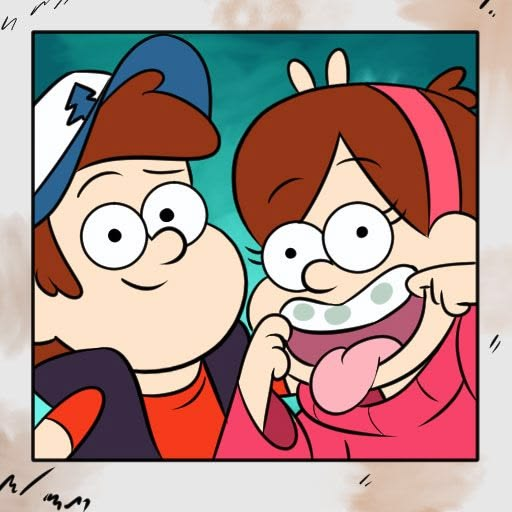
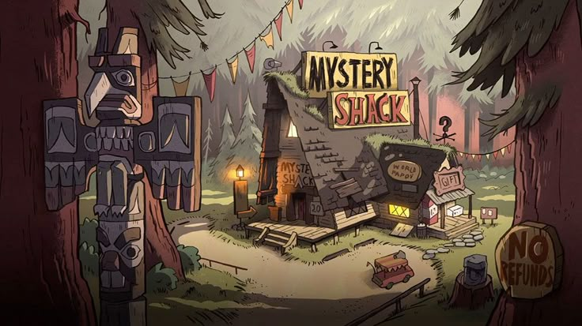
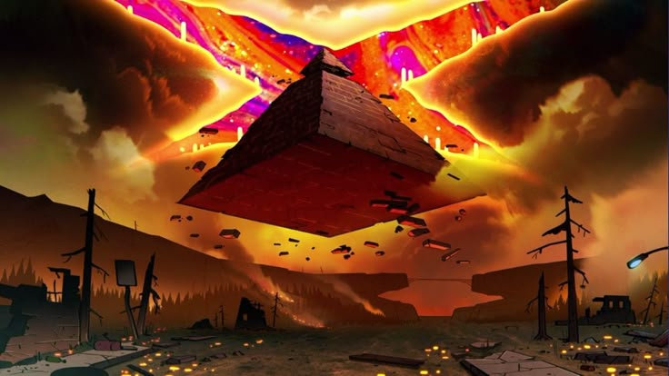
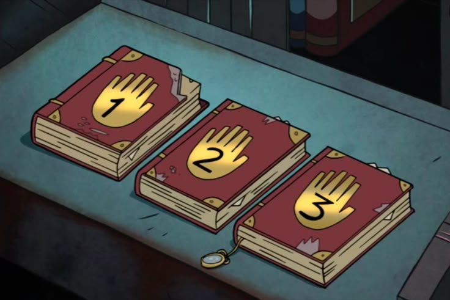
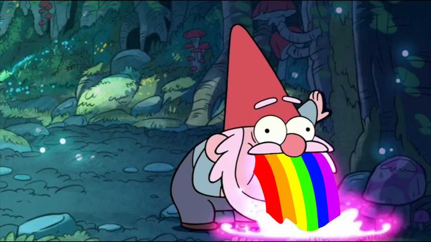

HISTÓRIAS QUE ATRAVESSARAM GERAÇÕES.
Uma viagem pela TV, pelos heróis e pelas animações que transformaram tardes comuns em grandes aventuras.
APERTAR O PLAYNOSTALGIA PLAY
Uma viagem pela TV, pelos heróis e pelas animações que transformaram tardes comuns em grandes aventuras.
APERTAR O PLAY
Duas produções anteriores aos anos 90 que permaneceram vivas na memória de quem cresceu cercado por fantasia e aventura.

1546%#4fTd6$¨#52!!

1975
Tokusatsu, ação e personagens que viraram memória afetiva.

GRAVITY FALLS

GRAVITY FALLS

GRAVITY FALLS


